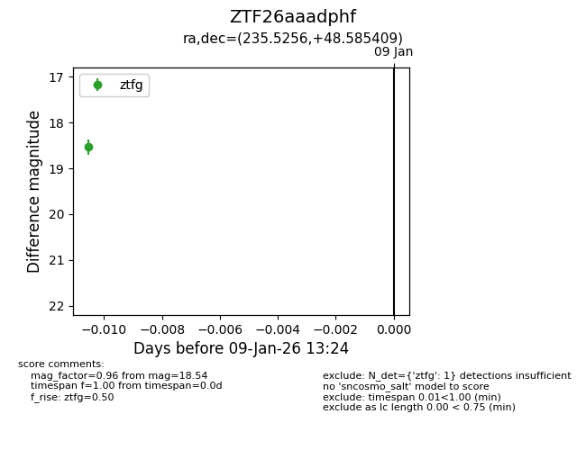
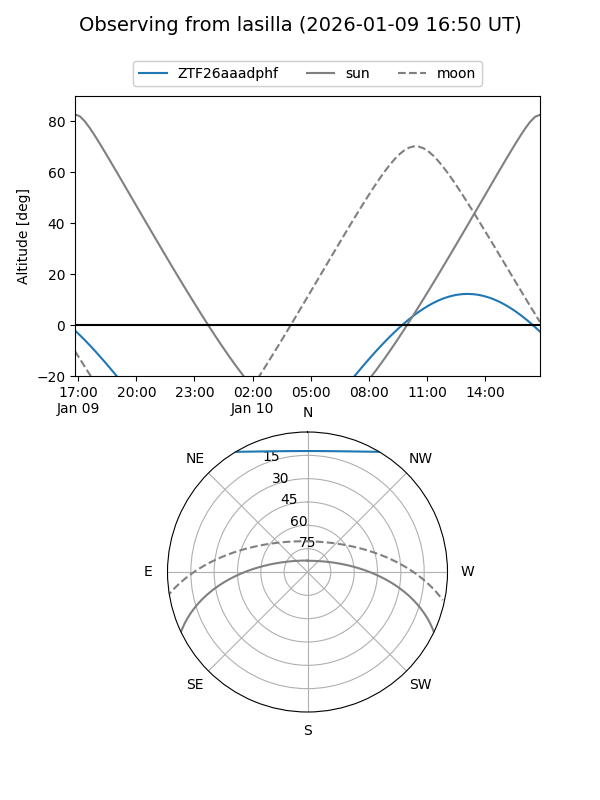
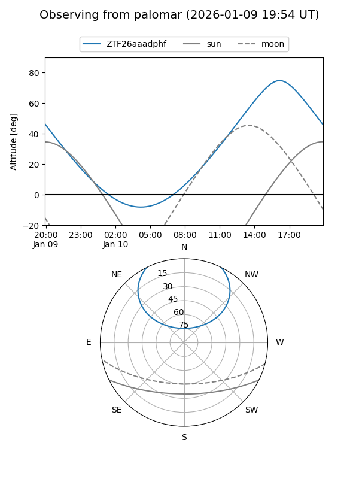

ZTF26aaadphf
Target ZTF26aaadphf at 2026-01-09 13:24
Aliases and brokers:
FINK: link
Lasair: link
ALeRCE: link
alt names
ZTF26aaadphf (ztf,fink_ztf)
Coordinates:
equatorial (ra, dec) = 235.5256,+48.58541
equatorial (HMS+DMS) = 15:42:06.15,+48:35:07.47
galactic (l, b) = (77.7606,+50.79265)
Flags:
Photometry:
last ztfg=18.54
1 ztfg detections
Lightcurve

Visibility


Additional plots